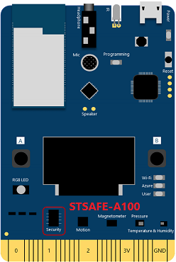
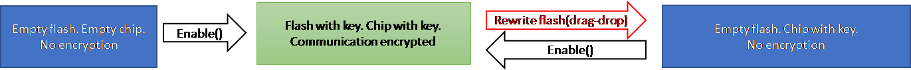
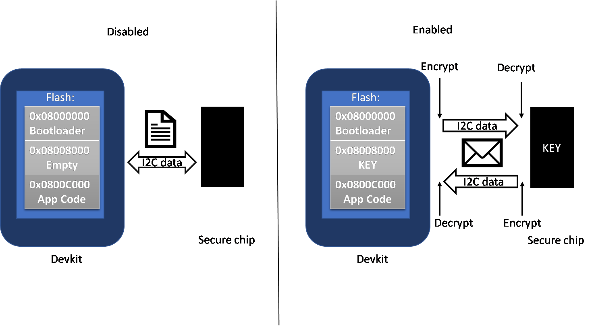

Understand security chip
Overview
IoT security is the area of endeavor concerned with safeguarding connected devices and networks in the Internet of things (IoT). The MXChip IoT DevKit comes with STSAFE-A100 secure chip from STMicroelectronics to fulfill the secure needs on the device end. With STSAFE, credentials such as WiFi password, connection strings for the cloud services and other confidential data are able to be securely stored in it. This article explains secure levels provided on IoT DevKit using STSAFE.
Secure solution
STSAFE-A100
The STSAFE-A100 consists of a full turnkey solution with a secure operating system running on the latest generation of secure microcontrollers.

On the chip, it employs data partitions to be used to store critical data such as Wi-Fi SSID, Wi-Fi password and IoT hub connection string safely. Credential data can be isolated in those partitions. To read and write those partitions, a developer uses dataZoneIndex for operating on specific partition. See API Reference to learn about using it on Arduino.
Enable the secure channel
By default, the data you store in STSAFE-A100 is in plain text, enable security channel can encrypt the data and the communication between main chip and STSAFE-A100 is also protected.
There are two ways to enable it:
- Use
enable_secure 1command in Configuration Mode. - Call
enableHostSecurityChannel()function in Arduino. see API reference.
After the secure channel is enabled, the IoT DevKit will negotiate a key with secure chip. The key will be stored at both IoT DevKit and secure chip side. All data as well as the read / write operations on I2C will then be encrypted.
Notice: Enable the security chip with caution. Using drag and drop to upgrade firmware will make the data saved in EEPROM no longer be readable immediately after enabling the security channel. This is a design with the security chip to ensure data can not be breached.
The status between enabling and disabling the security channel.

The difference of the data communication between IoT DevKit and the security chip (EEPROM).

Problems and feedback
If you encounter problems, you can find FAQs if you encounter problems or reach out to us from our Gitter channel.